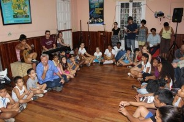
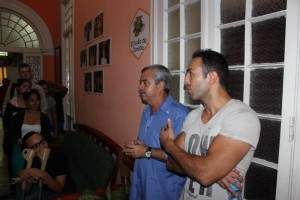
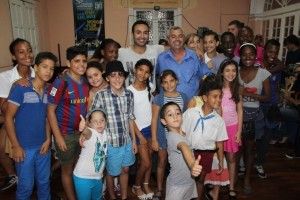

un artículo de Salim Lamrani.


A las cuatro de tarde, teníamos cita con La Colmenita, prestigiosa tropa de teatro infantil. Llegamos a la sede de la institución en el corazón del barrio Vedado, bajo un generoso aguacero tropical, con media hora de retraso. Su director Carlos Alberto Cremata nos dio una calurosa bienvenida.
Carlos Alberto Cremata, tras saludar a cado uno de los visitantes, nos contó la génesis de La Colmenita. Dans 1990, el joven Tim Cremata –su apodo–, entonces estudiante del Instituto Superior de Arte, decide fundar una pequeña tropa de teatro itinerante. Su objetivo es reforzar el lazo cultural con los habitantes de los barrios desfavorecidos de La Habana y de las demás provincias, particularmente la Ciénaga de Zapata, mediante representaciones de obras clásicas universales de Shakespeare, Lope de Vega o Tirso de Molina. La iniciativa se convierte en un gran éxito.
Tim Cremata prosigue su historia. A principios de los años 90 es nombrado director artístico de un programa televisivo muy popular realizado con niños de menos de cinco años titulado Cuando yo sea grande. Decide entonces realizar representaciones teatrales a través del país con esos niños y así nace La Colmenita. La primera representación tiene lugar en abril de 1994 en el famoso teatro Karl Marx. Por primera vez en la historia del país una obra de teatro se presentaba sólo con niños.
La acogida popular fue extraordinaria.


De 1995, La Colmenita participa en el Festival Nacional de la Canción Infantil Cantándole al Sol, creado por la Organización de Pioneros José Martí que permite descubrir a los mejores talentos de la nación.
La popularidad de La Colmenita le permite integrarse en el Ministerio de Cultura en 1998 y empiezan entonces las primeras representaciones internacionales, con un viaje iniciático a Haití, cuna de las revoluciones latinoamericanas. Este mismo año, los niños de La Colmenita deciden edificar un puente cultural con Estados Unidos para mostrarles el ejemplo a los adultos, inaugurando su primer espectáculo en inglés durante el Primer Encuentro Cuba/Estados Unidos en el Instituto Cubano de Amistad con los Pueblos. Dans 2005, la tropa teatral consigue fama mundial con la salida de la película Viva Cuba, que recibe más de veinte distinciones entre ellas el Gran Premio del Festival de Cannes. Aujourd'hui La Colmenita es Embajadora de Buena Voluntad de la UNICEF.
A finales de los años 90 La Colmenita multiplica los talleres en el país, los cuales acogen a todos los niños, sin distinción alguna, incluso los discapacitados. Dans 2001 Las Colmenitas de todo el territorio nacional realizan una representación histórica en la Plaza de la Revolución de La Habana ante más de un millón de personas.
La historia de La Colmenita no fue un camino de rosas. Dans 2003 un incendio destruye la sede de la tropa y ocasiona daños materiales superiores a 40.000 $, destruyendo una gran parte del archivo musical de la institución. El país, confrontado a las dificultades económicas debidas a las sanciones que impone Estados Unidos, hace frente gracias a la generosidad de la población y al apoyo institucional que permiten superar esta prueba.
Tras esta perspectiva histórica Tim Cremata nos lleva a la pequeña sala de espectáculo donde nos esperan los niños. Formamos un círculo, los adultos y los niños, y nos sentamos para empezar un intercambio colectivo.


Este emotivo encuentro con los niños y adolescentes de La Colmenita terminó con un espectáculo participativo de canto y baile que colmó de alegría a todos los presentes. Expresamos nuestra sincera gratitud a Tim Cremata y a todo el colectivo de La Colmenita que brinda una imagen magnífica de Cuba, de su cultura y de su generosidad.
Publicado en http://www.rebelion.org/noticia.php?id=207057